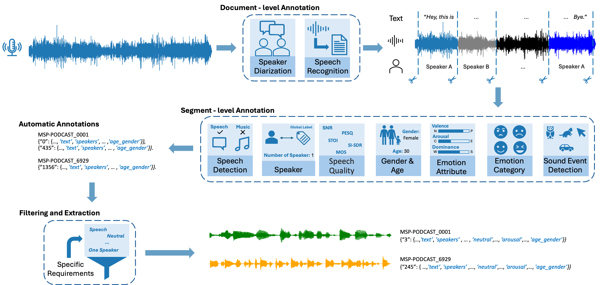

The NaturalVoices dataset is a large-scale collection of 3,817 hours of podcast speech from 6,929 episodes, featuring rich, expressive, emotional, and spontaneous in-the-wild speech.
Our multi-module processing pipeline extracts comprehensive annotations, including speaker information, speech quality, transcripts, and emotion labels, providing valuable resources for speech processing.
The following is an overview of our dataset based on some aspects provided by our pipeline. For other information like speech quality, emotion attributes, please check our paper.
Basic Information
Podcasts: 6,929 episodes
Total hours: 4,000 hours
Utterances: xxx (number)
Speaker
Male: xx hours
Female: xx hours
Single Speaker Utterance: xx hours
Speakers with Global Label: xx
Emotion Category
Neutral: xx hours
Happy: xx hours
Sad: xx hours
Angry: xx hours
Sound Event
Total Categories: xx
Speech: xx hours
Other: xx hours
Organization
Pipeline Overview

The overview of our pipeline processing our podcast audio. It contains four steps: Data collection; Document-level annotation; Segment-level annotation; and filtering and extraction.
Example: Pipeline Annotation Result for Audio Segment